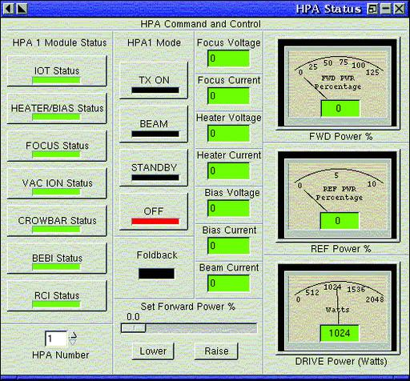

Our nominee for Free Software of the Week is www.oblomovka.com/code/haiku/haiku. It's a Python script that lets you find accidental haiku in any text file, as we did in the LDP HOWTOs way back in 2000. One Linux mailing list contained these:
Well, Junkbuster won't let me view it. I'm sure it'sfascinating, though.
I would rather chewmy leg off than use Netscapeweb servers again.
Solaris weeniesand retards: /opt/foo should be/usr/lib/foo dammit.
Orinoco hasby far the best range, and avery nice driver.
Bush's passion forliterary works was sparkedat an early age.
You'll believe us. Youhave no choice. INTERACTIVECOMPUTER SERVICE.
Nielsen has nevercreated a beautifuldesign in his life.
A section in thecathedral bar areais reserved for us.
Even Richard Stallman is a (haiku) poet and doesn't know it. From the gnu.org site, this haiku about the economic harm of proprietary software:
One person gains one dollar by destroying twodollars' worth of wealth.
—Don Marti
:What's the best looking Linux you've ever seen? Well, if you're among the shrinking number of people who haven't been stunned by HDTV, you may have already seen it. Acrodyne Industries (www.acrodyne.com), the television transmitter division of Sinclair Broadcasting, has a history of industry firsts, and the latest is embedding Linux in their latest transmitters.
Andrew Domonkos, principal systems software engineer with AI, says,
We are the first in our industry to introduce a television transmitter system using Linux as its operating system. Our-top-of-the-line HDTV transmitter series, the Quantum, uses an industrial PC running Red Hat Linux in a network server configuration. We chose Linux for both its reliability as well as its networking potential. Running anything else would be unacceptable; when a TV broadcaster goes off the air due to a system controller problem, the loss in revenue can be tremendous.
A paper by Acrodyne's Marc Polovick explains:
Linux (which is internet synonymous) is a UNIX-based OS and provided a valued starting point to this requirement. It was the intent of the Quantum designers to use UNIX as it was designed to be used, in a distributed processing “server/client” environment, a real-time/object-oriented data driven system architecture. A user-friendly GUI is provided and displayed through one large LCD display device. This intuitive graphics-based interface has been designed to be mimicked and provide secure “remote anywhere” monitoring capabilities that are network accessible in almost every network environment.
Quantum's User-Friendly GUI
More proof that Linux just keeps looking better.
—Doc Searls
Percentage of record label audits found to have underpaid artists: 99.99
Thousands of cases from which the above numbers were derived: 9
Number of cases in the same group in which the artist was overpaid by the label: 1
Millions of dollars required to produce a hit record: .5
Number of families followed in a 17-year study of TV and violence: 707
Range of chance that those watching seven or more hours per week of TV in their formative years would later commit a violent act: 16-116
Billions of dollars grossed by Sony in record sales: 4.6
Billions of dollars grossed by Sony in electronics sales: 40
Percentage of profit margin of the record industry in 1994: 30
Range in percentage of profit margin of the record industry in 2002: 8-10
Percentage of the American population using the Internet in September 2001: 54
Millions of Americans using the Internet in September 2001: 143
Percentage of American children aged 5 to 17 using computers at home and school: 90
Percentage of American teenagers using the Internet: 75
Thousands of dollars Winnebago Industries expected to pay for a Microsoft Corp. Exchange upgrade: 150
Thousands of dollars paid by Winnebago for a Linux e-mail system, mostly by upgrading the company IBM mainframe: 26
Percentage of mainframe MIPS configured for Linux among all shipped by IBM in Q4 2001: 11
Size in square kilometers of the Larsen B ice shelf in Antarctica at the end of 2001: 3,250
Weight in billions of tons of the Larsen B ice shelf at the end of 2001: 500
Average temperature (Celsius) increase at the Larsen B ice shelf over the past 50 years: 2.5
Years over which the Larsen B ice shelf is known to have been stable: 1,800
Months it took in 2002 for the Larsen B ice shelf to disintegrate from warming: 2
1-3: Simon Renshaw, manager of the Dixie Chicks, in the New York Times
4-7: New York Times
8-11: US Department of Commerce, Economics and Statistics Administration
12-14: US Department of Commerce
15-17: eWeek
18-22: BBC
Usually the news from the Netcraft Web Server Survey is upbeat for Linux folks, but the latest report (March 2002) isn't. Look at the main graphs at www.netcraft.com/survey, and you'll see a tug of war between Apache and Microsoft IIS web servers that's been going on since 1998. In 2001 IIS made some significant gains on Apache, which held shares upwards of 60%, but those finally seemed to reverse in February 2002. But in March, IIS gained 4.89%, while Apache dropped 4.67%, to percentages among Top Developers of 57.36% for Apache and 34.02% for IIS.
Netcraft says this represents a shift of about two million sites, “primarily as a result of register.com and Network Solutions migrating their domain parking facilities to a Windows front end. Register.com had been serving from Apache on Linux and is in the midst of migrating to Windows”, Netcraft reports.
Of course, parked domains are a lot less functional than active ones, so this probably doesn't say much about the real and practical uses of the Web from the server side. But it's still annoying to lose even a few bragging rights share points.
Perhaps when these big registrars finish migrating to the Dark Side, the Apache share erosion will cease, or even turn around.
—Doc Searls
Questions
Q1. One day in the 1940s, Harvard's famed Mark II, the precursor to today's computers, failed. When the problem was investigated, Grace Hopper and her colleagues found that a moth had lodged itself in the circuits, causing the machine to malfunction. The moth was removed with a pair of tweezers (and later was preserved at the Naval Museum in Dahlgren, along with Homer's logs). What word is derived from this incident?
Q2. We have all heard of various flavours of UNIX: AIX, Digital UNIX, HP-UX, Sun-Solaris, IRIX, SCO UNIX. The question is simple: which organization was responsible for development of Xenix, a version of UNIX that ran on PCs and was compatible with AT&T's System V Definition?
Q3. This person is often known as the Wizard of Woz. When he was 18 years old, he used to sell an illegal device called Blue Box at Homebrew Computers, which enabled people to make free long-distance calls. He used the name Oak Toebark, and his first call with this device was to the Pope in the Vatican to make a confession. Who is he?
Q4. In the lobby of Cyrix Corporation's headquarters in Texas there is a huge tomb. What famous words are inscribed on the tomb? (Guessable if you think of the competitors.)
Q5. How and where would you most probably read the following:
And the beast shall come forth surrounded by a roiling cloud of vengeance. The house of the unbelievers shall be razed and they shall be scorched to the earth. Their tags shall blink until the end of days.
Q6. The author of this program had worked for a year as a volunteer with a project in southern Uganda. After he returned, he found his heart was still there. So, he made a program that we all probably use: Charityware. According to the author, “You can use and copy it as much as you like, but you are encouraged to make a donation to orphans in Uganda.” Who is the author and which program are we talking about?
Q7. Ian Hutton, a Microsoft spokesman, admitted a certain wrongdoing on Microsoft's part. He also complained that Microsoft and its PR firm had been receiving malicious and obscene e-mail from Linux fans. In response to this, Eric S. Raymond said, “One wonders if Hutton believes it would be unprofessional to address strong language to a burglar caught nipping the family silver.” What event is being talked about here?
Q8. Charles Augustus Lindbergh was the first Time: Man of the Year in 1927. Franklin Delano Roosevelt was Time: Man of the Year three times, in 1932, 1934 and 1941. Who was the Time: Man of the Year in 1982?
Q9. He was a wild Greek centaur who tried to abduct Deianira, Hercules' new bride, while ferrying her across the River Evenus. Hercules heard her cries and shot an arrow into the heart of this centaur. The teenage author of an open-source security software was looking for a name for his project when he chanced upon this name while flipping through the pages of a mythology book. Immediately taken by how cool it sounded, he named his software after this centaur. Name this centaur/software.
Q10. I am a member of the Merrill Lynch's Technology Advisory Board and appeared as a supporting artist in two record albums: “A Song of Gods Gone Mad” and “Full Circle”. I am close to completing a science fiction book titled Shadows and Stars and am a Tae Kwon Do Federation 1st Dan Black Belt. Netscape Communications described my paper as a major factor in their decision to release their client software as open source, and I have never taken any courses in computer science or software engineering. Who am I?
Answers
A1. Apparently, on discovering the moth, Hopper exclaimed, “There is a bug in the computer.” From then on, whenever there was a problem with the computer, scientists said they were looking for bugs. Even today, any software mistake is called a bug.
A2. Surprising as it may sound, Xenix was developed by Microsoft Corporation.
A3. Steve Wozniak of Apple Computers fame. According to John T. Draper, the call was made at 4 A.M. and went like this: “Is the Pope there? I'm calling from California, and I need to confess!”
A4. Intel Inside
A5. When you type “about:mozilla” in the location bar of Netscape.
A6. Bram Moolenaar and Vim.
A7. The Mindcraft test fiasco and its aftermath.
A8. The personal computer. More information is available at www.time.com/time/special/moy/1982.html.
A9. Nessus. Renaud Deraison, the author, was just 18 years old when he wrote it.
A10. Eric S. Raymond
—Sumit Dhar
Anti-UNIX Web Site that Runs on UNIX
In late March 2002, Microsoft and Unisys launched a publicity campaign against Sun, IBM, Hewlett-Packard and every other competitor that runs UNIX—including Linux—on its big systems. The publicity campaign was scheduled to run for 18 months and cost upwards of the $25 million that Unisys said it was spending alone on the project.
Rather than compete on the merits of Microsoft's and Unisys' competitive product offerings, the company decided to wage the high-tech equivalent of a negative political campaign. Titled “We have the way out”, the campaign incredibly accuses UNIX of cornering customers in an expensive box. One ad says:
No wonder Unix makes you feel boxed in. It ties you to an inflexible system. It requires you to pay for expensive experts. It make you struggle daily with a server environment that's more complex than ever.
As if the words in this ad were not sufficiently irony-free, the campaign's web site, wehavethewayout.com, was found to have been served by Apache on FreeBSD. After that bad publicity became news, the site was moved to Windows, first at the same Verio hosting service, and then at Unisys. But in the process it went dark, displaying either a blank white page or a 403 error message.
Later the page came back up, offering membership in “our ecommunity” and five PDF papers to download. The web page was copyrighted by Unisys Corporation.
The campaign was reportedly intended to promote Unisys' ES7000 server and the Datacenter version of Windows 2000, which can run on machines with as many as 32 processors. Unisys faces an uphill battle in this category—not only with Sun and HP, which have had strong UNIX offerings for many years, but from IBM's new eServers, which run either Linux or Microsoft OSes on systems with up to 16 processors and sell at lower prices than Unisys' ES7000s. CNET also reports that only “a few hundred” ES7000 servers have been sold and that “sales partnerships with Dell, Compaq and Hewlett-Packard have all fallen apart”.
Naturally a new site called wehavethewayin.com appeared shortly after wehavethewayout.com fell on its face. With pointers to all the leading UNIX variants, wehavethewayin.com says:
These days, with enough money, a report or statistic can be printed that says anything. Usually this is done because those with enough money want to make others believe their lies. Make sure that you are reading a genuine article and not a paid-for lie''. The page is copyrighted by Jon Fields of LinuxFreak.org. Shortly after it went up, Fields reported more than 400,000 hits to the page.
—Doc Searls
Ninety percent of everything is crap.
—sturgeon
The TiVo is a wrapper around a bad interface.
—Bruce Sterling
The WWW is bloatware. Finding things is impossible because there's so much stuff out there. Think how much hard drive space is wasted on all kinds of web pages that only .00000000001% of the world ever reads. Since the vast majority of people only go to Yahoo, Ebay and MSN, wouldn't the WWW be better if it only had Yahoo, Ebay and MSN? It would be much more “optimized”.
—Joel Spolsky
Let me be clear: Microsoft expects 802.11 and its supersets to be present in most places that people spend time. In corporate offices it will be pervasive. In campuses, hotels, convention centers, airports, shopping centers—virtually everywhere—this 11 megabit and up capability will be there.
—Bill Gates
Yes, Microsoft twisted the market's Invisible Hand until all it could do was salute smartly in the direction of Redmond. But the market is still capable of containing Microsoft's hegemony. Just barely. Maybe. I am far more worried about the entertainment-legislative complex. Because the market has emphatically rejected its business model, it's perilously close to rewriting the software and hardware rules to force the market to comply. The government is both venal and stupid enough to do it.
—David Weinberger
Most people who tell you about the patent system have a stake in it, and so they want you to like it. But patents are like the lottery because they only rarely bring benefits to people. Lotteries invite you to think about winning, never about losing, and it is the same with the patenting system.
—Richard M. Stallman
A gored ox is a vigilant ox.
—Jim Barksdale
Software is like sex. You certainly can pay to watch actors, but some things are more fun to do for yourself.
—Miguel de Icaza
I'm wary of the trend toward things which can undermine the reliability and accuracy of Google.
—Seth David Schoen
I only hope no one tries to call people who copy digital media “software terrorists”.
—Derek K. Miller
It was naïve to assume the Net would stay open. Nothing ever does. Things have not been going well in that very large corporate interests, protecting business models, are leveraging lobbying to pass legislation that is harmful and stupid.
—Mitch Kapor
The Hollings bill is a kind of a setback. It threatens what people on both sides have been trying to achieve....People in the industry are not looking for the lock and key scenarios that the Hollings discussions raise.
—Hillary Rosen
The content industry is now Disney and Fox coming to Congress and saying “you choose...you come up with a solution”. These guys think this is “open source”.
—US Sen. Maria Cantwell (D-Wash)
We also need the buggywhip protection act, mandating that no moving vehicle sold in the US not be equipped with a buggywhip. And the Railway Protection Act, mandating that no mass transportation ticket be sold for a service that moves faster or less expensively than a train ride.
—The Rev. A. K. M. Adam
Imagine if radio came before telephony. People would be saying “Who wants to talk personally? Broadcasting is everything!”
—Bob Frankston
Unlicensed spectrum is the best thing we've ever done.
—FCC Chairman Michael Powell
No man is entitled to the blessings of freedom unless he be vigilant in its preservation.
—Douglas MacArthur

{kind=link}